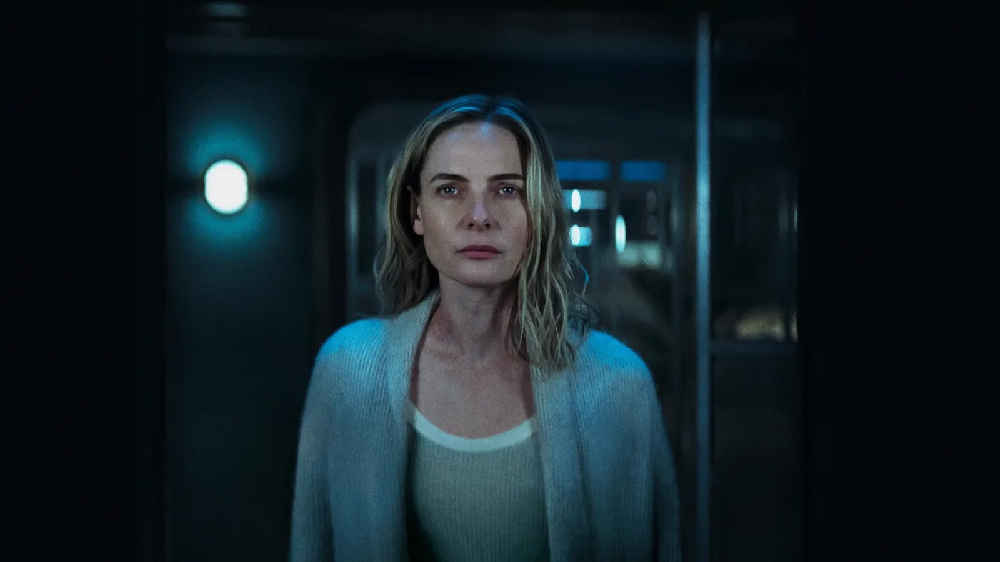
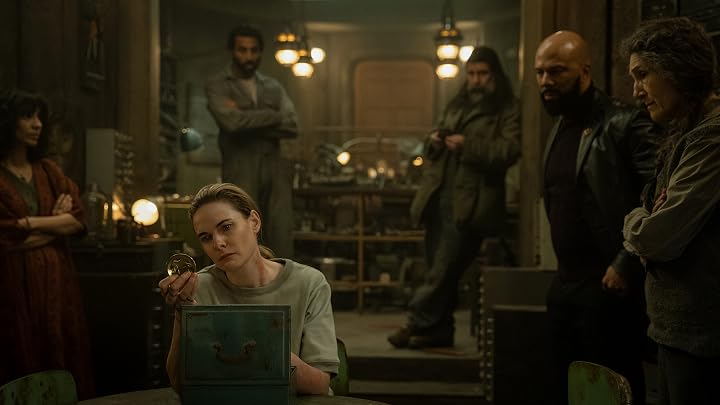
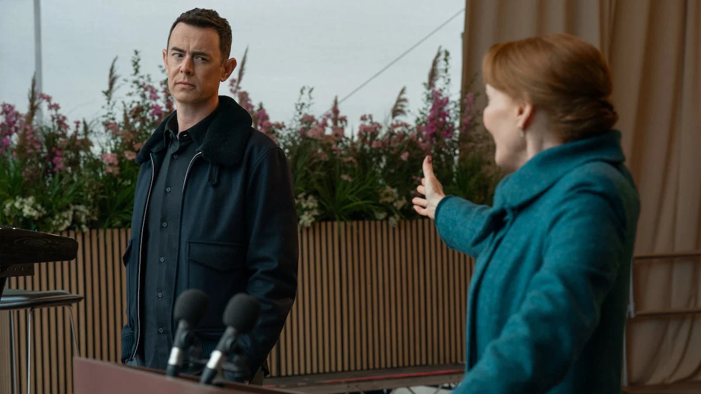

Silo — Temporada 3
Cuando el pasado deja de ser un paréntesis y se convierte en la mitad de la historia

Llevaba ganas de esta temporada y ha cumplido. Es tensa, es emocionante, y casi todo el rato me pasaba lo mismo: acababa un capítulo pensando que ya paraba y terminaba viendo el siguiente.
Juliette vuelve al silo con amnesia. No recuerda buena parte de lo que vivió fuera, y hay una amenaza nueva creciendo dentro. El punto de partida es sencillo, pero funciona muy bien porque todo el rato está esa distancia entre lo que ella cree saber y lo que se le ha borrado.

Si me quedo con una cosa, es la trama del pasado. Iba con cierta prevención, porque estos saltos en el tiempo suelen ser el rato que aguantas para volver a lo importante. Aquí no ha sido así. Jessica Henwick y Ashley Zukerman llegan como Helen Drew y Daniel Keene y desde el principio enganchan casi tanto como la Juliette del presente. Ahí se cuenta el origen del sistema de silos, desde el mundo de antes de la catástrofe. No lo he sentido como relleno en ningún momento.
Y luego están los secundarios, que es de lo que más me ha gustado de toda la temporada. Consiguen que casi todos brillen en algún momento, que a cada uno se le dé su escena, su instante en el que dejas de verlo como comparsa y empiezas a preocuparte de verdad por lo que le pueda pasar. No es solo que estén bien escritos, es que la serie se toma el tiempo de pararse en ellos aunque no sean quienes llevan el peso principal de la trama. Eso, en una serie coral como esta, no es tan habitual como debería.

Comparada con las dos temporadas anteriores, diría que se mantiene exactamente en ese nivel tan alto que ya había alcanzado Silo. No encuentro nada en esta entrega que me parezca un escalón por debajo de lo que ya habíamos visto, lo cual, después de dos temporadas ya muy buenas, dice bastante.
Hay un dato que me hace especial ilusión y que no tiene que ver con lo que pasa dentro de la ficción: la tercera y la cuarta temporada se rodaron seguidas, así que el final de la serie ya está grabado y llegará el 9 de julio de 2027. Después de acostumbrarme a esperar tres años entre temporada y temporada, saber que esta vez el desenlace ya existe y que la espera va a ser mucho más corta me alegra bastante. No hace falta ni un año entero para saber cómo termina todo.

Silo sigue siendo mi serie de ciencia ficción favorita de las que están en emisión ahora mismo, y esta temporada no ha hecho más que reforzar eso. Me ha dejado con muchísimas ganas de ver cómo se cierra la historia.
Ficha técnica
- Creada por: Graham Yost
- Basada en: la trilogía Crónicas del Silo, de Hugh Howey
- Reparto principal: Rebecca Ferguson, Common, Harriet Walter, Chinaza Uche, Avi Nash, Alexandria Riley, Shane McRae, Rick Gomez, Clare Perkins, Jessica Henwick, Ashley Zukerman
- Temporadas: 3 (4 confirmadas, la última prevista para el 9 de julio de 2027)
- Plataforma: Apple TV+